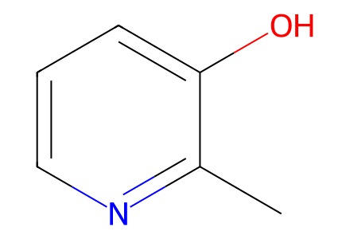
Cc1ncccc1O43 molecular records; 28 preparation events; 13 selected paths. Main article preparation network 1-4, 5a-l and 6a-l, plus the observed unsaturated Heck screening product. Waltherione S is 6a; 6b-l are synthetic analogues. Main figures and experimental section cover these steps; unavailable SI spectra are not claimed reviewed.
完整 JSON · 逐步 CSV · 路线序列 · SDF · HRMS 核对
| 事件 | 分子连接 | 报告产率 | Canonical reaction SMILES |
|---|---|---|---|
| E01 | 1 → 2 | 2: 89.5% | Cc1ncccc1O>>Cc1nc(Br)cc(Br)c1O |
| E02 | 2 + iodomethane → 3 | 3: 92.3% | CI.Cc1nc(Br)cc(Br)c1O>>COc1c(Br)cc(Br)nc1C |
| E03 | 3 + benzyl-alcohol → 4 | 4: 93.5% | COc1c(Br)cc(Br)nc1C.OCc1ccccc1>>COc1c(OCc2ccccc2)cc(Br)nc1C |
| E04 | 4 + coupling-partner-a → 5a | 5a: 63.5% | C=CCCCCCCCCCC.COc1c(OCc2ccccc2)cc(Br)nc1C>>CCCCCCCCCCCCc1cc(OCc2ccccc2)c(OC)c(C)n1 |
| E05 | 5a → 6a | 6a: 78.4% | CCCCCCCCCCCCc1cc(OCc2ccccc2)c(OC)c(C)n1>>CCCCCCCCCCCCc1cc(=O)c(OC)c(C)[nH]1 |
| E06 | 4 + coupling-partner-b → 5b | 5b: 59.2% | C=Cc1ccccc1.COc1c(OCc2ccccc2)cc(Br)nc1C>>COc1c(OCc2ccccc2)cc(C(C)c2ccccc2)nc1C |
| E07 | 5b → 6b | 6b: 74.0% | COc1c(OCc2ccccc2)cc(C(C)c2ccccc2)nc1C>>COc1c(C)[nH]c(C(C)c2ccccc2)cc1=O |
| E08 | 4 + coupling-partner-c → 5c | 5c: 62.2% | C=CCc1ccccc1.COc1c(OCc2ccccc2)cc(Br)nc1C>>COc1c(OCc2ccccc2)cc(CCCc2ccccc2)nc1C |
| E09 | 5c → 6c | 6c: 72.9% | COc1c(OCc2ccccc2)cc(CCCc2ccccc2)nc1C>>COc1c(C)[nH]c(CCCc2ccccc2)cc1=O |
| E10 | 4 + coupling-partner-d → 5d | 5d: 73.3% | COc1c(OCc2ccccc2)cc(Br)nc1C.OB(O)c1ccc2c(c1)OCO2>>COc1c(OCc2ccccc2)cc(-c2ccc3c(c2)OCO3)nc1C |
| E11 | 5d → 6d | 6d: 70.1% | COc1c(OCc2ccccc2)cc(-c2ccc3c(c2)OCO3)nc1C>>COc1c(C)[nH]c(-c2ccc3c(c2)OCO3)cc1=O |
| E12 | 4 + coupling-partner-e → 5e | 5e: 83.2% | COc1c(OCc2ccccc2)cc(Br)nc1C.OB(O)c1cccs1>>COc1c(OCc2ccccc2)cc(-c2cccs2)nc1C |
| E13 | 5e → 6e | 6e: 73.2% | COc1c(OCc2ccccc2)cc(-c2cccs2)nc1C>>COc1c(C)[nH]c(-c2cccs2)cc1=O |
| E14 | 4 + coupling-partner-f → 5f | 5f: 83.6% | COc1c(OCc2ccccc2)cc(Br)nc1C.OB(O)c1ccco1>>COc1c(OCc2ccccc2)cc(-c2ccco2)nc1C |
| E15 | 5f → 6f | 6f: 72.0% | COc1c(OCc2ccccc2)cc(-c2ccco2)nc1C>>COc1c(C)[nH]c(-c2ccco2)cc1=O |
| E16 | 4 + coupling-partner-g → 5g | 5g: 81.9% | COc1c(OCc2ccccc2)cc(Br)nc1C.COc1ccc(B(O)O)cc1OC>>COc1ccc(-c2cc(OCc3ccccc3)c(OC)c(C)n2)cc1OC |
| E17 | 5g → 6g | 6g: 74.3% | COc1ccc(-c2cc(OCc3ccccc3)c(OC)c(C)n2)cc1OC>>COc1ccc(-c2cc(=O)c(OC)c(C)[nH]2)cc1OC |
| E18 | 4 + coupling-partner-h → 5h | 5h: 78.5% | COc1c(OCc2ccccc2)cc(Br)nc1C.COc1cc(OC)cc(B(O)O)c1>>COc1cc(OC)cc(-c2cc(OCc3ccccc3)c(OC)c(C)n2)c1 |
| E19 | 5h → 6h | 6h: 69.0% | COc1cc(OC)cc(-c2cc(OCc3ccccc3)c(OC)c(C)n2)c1>>COc1cc(OC)cc(-c2cc(=O)c(OC)c(C)[nH]2)c1 |
| E20 | 4 + coupling-partner-i → 5i | 5i: 70.8% | COc1c(OCc2ccccc2)cc(Br)nc1C.OB(O)c1ccc(Cl)cc1>>COc1c(OCc2ccccc2)cc(-c2ccc(Cl)cc2)nc1C |
| E21 | 5i → 6i | 6i: 73.5% | COc1c(OCc2ccccc2)cc(-c2ccc(Cl)cc2)nc1C>>COc1c(C)[nH]c(-c2ccc(Cl)cc2)cc1=O |
| E22 | 4 + coupling-partner-j → 5j | 5j: 65.3% | COc1c(OCc2ccccc2)cc(Br)nc1C.OB(O)C1CC1>>COc1c(OCc2ccccc2)cc(C2CC2)nc1C |
| E23 | 5j → 6j | 6j: 69.1% | COc1c(OCc2ccccc2)cc(C2CC2)nc1C>>COc1c(C)[nH]c(C2CC2)cc1=O |
| E24 | 4 + coupling-partner-k → 5k | 5k: 68.4% | COc1c(OCc2ccccc2)cc(Br)nc1C.COc1ccc(Cl)c(B(O)O)c1>>COc1ccc(Cl)c(-c2cc(OCc3ccccc3)c(OC)c(C)n2)c1 |
| E25 | 5k → 6k | 6k: 76.7% | COc1ccc(Cl)c(-c2cc(OCc3ccccc3)c(OC)c(C)n2)c1>>COc1ccc(Cl)c(-c2cc(=O)c(OC)c(C)[nH]2)c1 |
| E26 | 4 + coupling-partner-l → 5l | 5l: 66.1% | COc1c(OCc2ccccc2)cc(Br)nc1C.OB(O)c1cc(F)c(F)c(F)c1>>COc1c(OCc2ccccc2)cc(-c2cc(F)c(F)c(F)c2)nc1C |
| E27 | 5l → 6l | 6l: 72.1% | COc1c(OCc2ccccc2)cc(-c2cc(F)c(F)c(F)c2)nc1C>>COc1c(C)[nH]c(-c2cc(F)c(F)c(F)c2)cc1=O |
| E28 | 4 + coupling-partner-a → 5a-prime | 5a-prime: 21.5% | C=CCCCCCCCCCC.COc1c(OCc2ccccc2)cc(Br)nc1C>>CCCCCCCCCC/C=C/c1cc(OCc2ccccc2)c(OC)c(C)n1 |

Cc1ncccc1O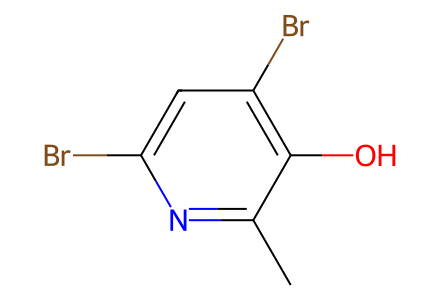
Cc1nc(Br)cc(Br)c1O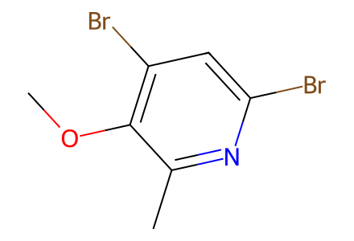
COc1c(Br)cc(Br)nc1C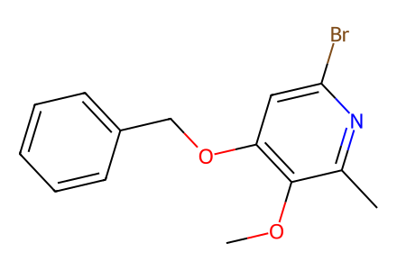
COc1c(OCc2ccccc2)cc(Br)nc1C
OCc1ccccc1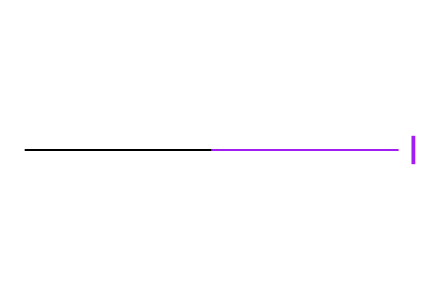
CI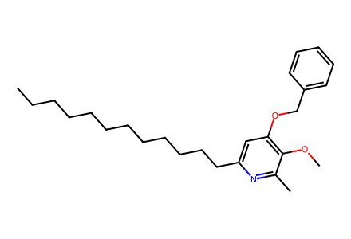
CCCCCCCCCCCCc1cc(OCc2ccccc2)c(OC)c(C)n1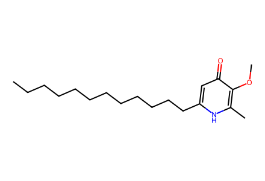
CCCCCCCCCCCCc1cc(=O)c(OC)c(C)[nH]1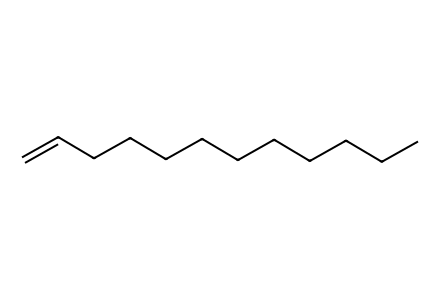
C=CCCCCCCCCCC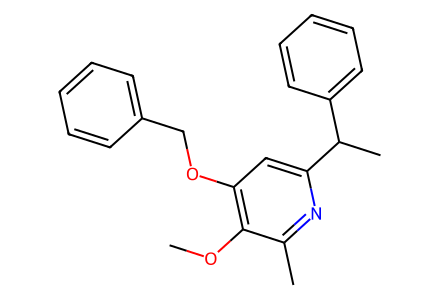
COc1c(OCc2ccccc2)cc(C(C)c2ccccc2)nc1C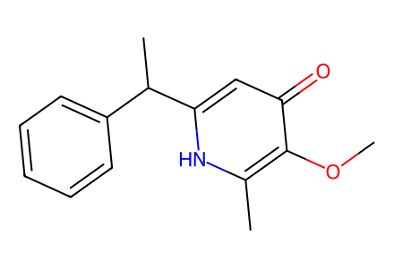
COc1c(C)[nH]c(C(C)c2ccccc2)cc1=O
C=Cc1ccccc1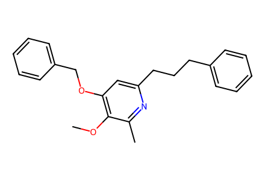
COc1c(OCc2ccccc2)cc(CCCc2ccccc2)nc1C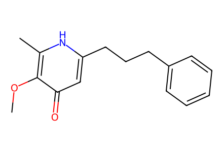
COc1c(C)[nH]c(CCCc2ccccc2)cc1=O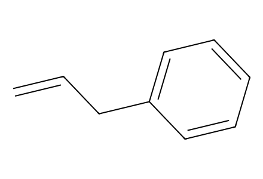
C=CCc1ccccc1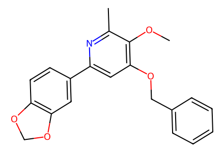
COc1c(OCc2ccccc2)cc(-c2ccc3c(c2)OCO3)nc1C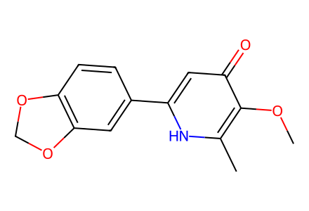
COc1c(C)[nH]c(-c2ccc3c(c2)OCO3)cc1=O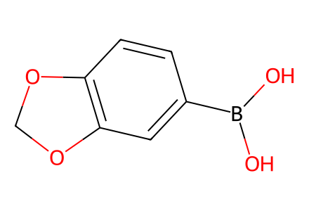
OB(O)c1ccc2c(c1)OCO2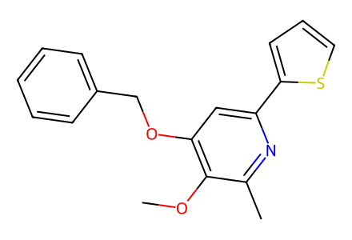
COc1c(OCc2ccccc2)cc(-c2cccs2)nc1C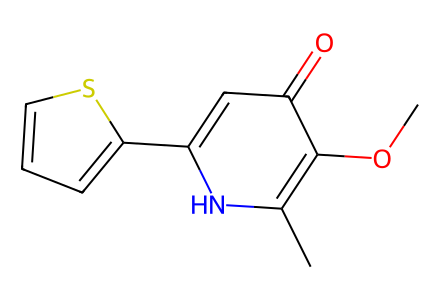
COc1c(C)[nH]c(-c2cccs2)cc1=O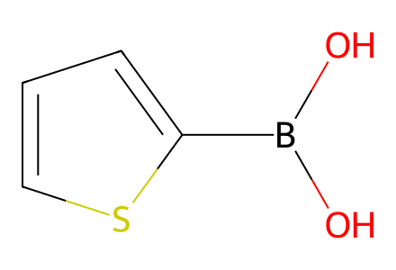
OB(O)c1cccs1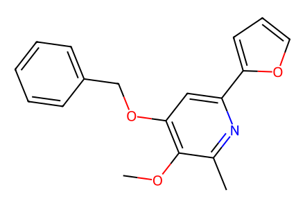
COc1c(OCc2ccccc2)cc(-c2ccco2)nc1C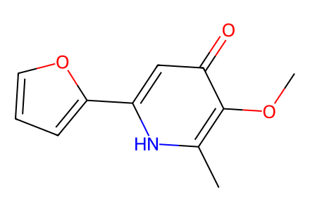
COc1c(C)[nH]c(-c2ccco2)cc1=O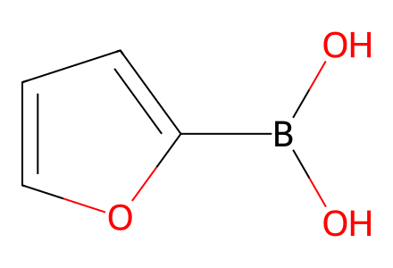
OB(O)c1ccco1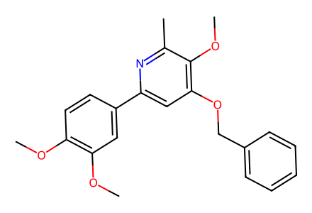
COc1ccc(-c2cc(OCc3ccccc3)c(OC)c(C)n2)cc1OC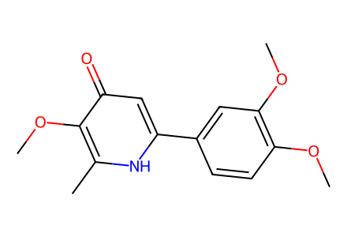
COc1ccc(-c2cc(=O)c(OC)c(C)[nH]2)cc1OC
COc1ccc(B(O)O)cc1OC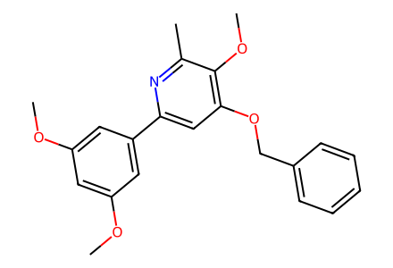
COc1cc(OC)cc(-c2cc(OCc3ccccc3)c(OC)c(C)n2)c1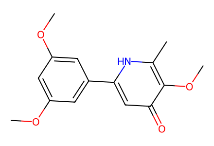
COc1cc(OC)cc(-c2cc(=O)c(OC)c(C)[nH]2)c1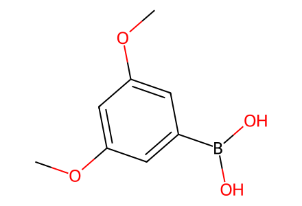
COc1cc(OC)cc(B(O)O)c1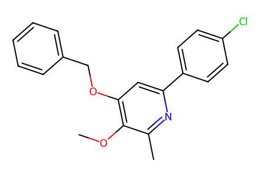
COc1c(OCc2ccccc2)cc(-c2ccc(Cl)cc2)nc1C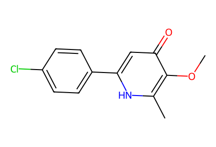
COc1c(C)[nH]c(-c2ccc(Cl)cc2)cc1=O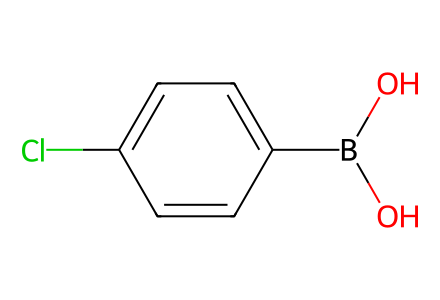
OB(O)c1ccc(Cl)cc1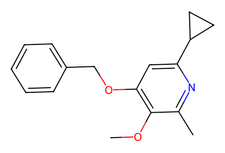
COc1c(OCc2ccccc2)cc(C2CC2)nc1C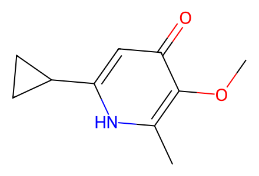
COc1c(C)[nH]c(C2CC2)cc1=O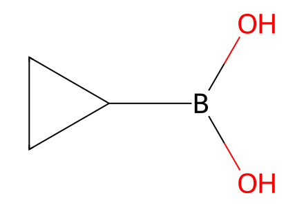
OB(O)C1CC1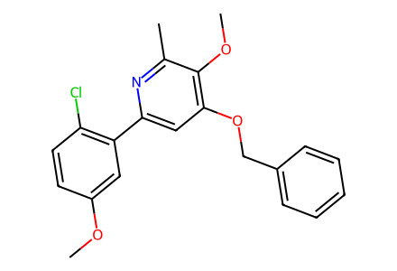
COc1ccc(Cl)c(-c2cc(OCc3ccccc3)c(OC)c(C)n2)c1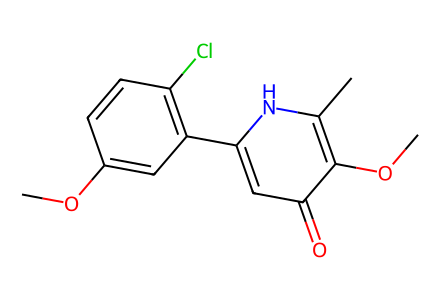
COc1ccc(Cl)c(-c2cc(=O)c(OC)c(C)[nH]2)c1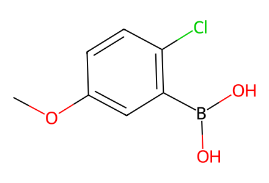
COc1ccc(Cl)c(B(O)O)c1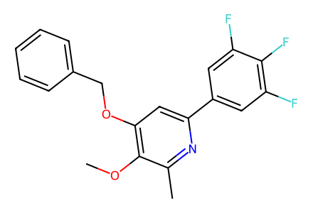
COc1c(OCc2ccccc2)cc(-c2cc(F)c(F)c(F)c2)nc1C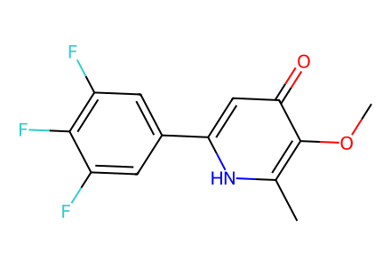
COc1c(C)[nH]c(-c2cc(F)c(F)c(F)c2)cc1=O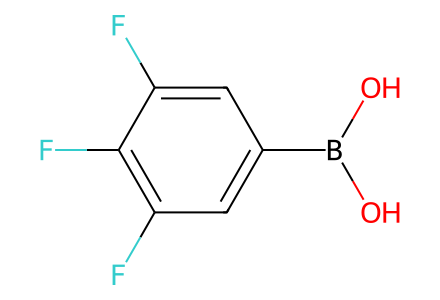
OB(O)c1cc(F)c(F)c(F)c1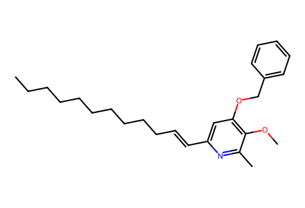
CCCCCCCCCC/C=C/c1cc(OCc2ccccc2)c(OC)c(C)n1